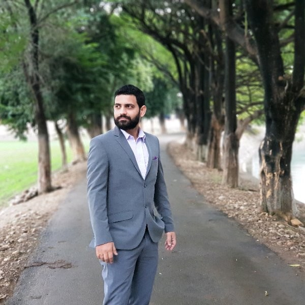

Dhruv Jasrotia

Professional Summary
Experienced Customer Success Leader with a proven track record in strategic planning, team
management, and client relations. Adept at driving customer retention and satisfaction through
innovative onboarding processes, cross-functional collaboration, and data-driven
decision-making. Skilled in coaching and mentoring teams to surpass targets, and proficient in
leveraging automation and self-service solutions to enhance customer experience. Committed to
fostering positive business relationships and improving customer success metrics.
Skills
- Strategic Planning
- Client Relations
- Customer Account Management
- Customer Retention
- Process Improvement
- Cross Funtional Collaboration
- Training & mentoring
- Client service optimization
- Data Analysis
- Automation & Self-service implementation
Work History:
CUSTOMER SUCCESS MANAGER, 10/2023 - 08/2024
CedCommerce, Lucknow, India
- Conducted training and mentored team members to promote productivity, accuracy,
and commitment to friendly service.
- Led the development of onboarding processes, reducing the time to value for new
customers.
- Collaborated cross-functionally with Sales and Product teams to improve customer
satisfaction and retention.
- Analyzed customer data to identify trends and develop strategies to enhance customer
success metrics.
- Utilized customer feedback to inform changes and improvements to customer success
plans.
- Established team priorities, maintained schedules, and monitored performance.
- Recruited, interviewed, and hired employees and implemented a mentoring program to
promote positive feedback and engagement.
- Cultivated positive rapport with fellow employees to boost company morale and
promote employee retention.
CUSTOMER SUCCESS AND SERVICE ELIVERY MANAGER, 09/2021 TO 10/2023
ISS Infotech Pvt. Ltd., Lucknow, India (Remote)
- Trained and regularly mentored associates on performance-oriented strategies and
customer service techniques.
- Implemented best practices for customer training and enablement programs to drive
product adoption and advocacy.
- Supervised employees and assessed performances to determine training needs and
define accurate plans for decreasing process lags.
- Researched and corrected customer concerns to promote company loyalty.
- Collaborated with upper management to improve customer service processes and
support structures company-wide.
ACCOUNT EXECUTIVE, 06/2019 - 09/2021
Hippo Innovations Pvt. Ltd., Gurgaon, India (Remote)
- Strengthened customer relationships with a proactive and collaborative approach to
managing needs.
- Trained clients on product features and updates to secure buy-in.
- Conducted integrated sales presentations to illustrate the value of the product or service
and tailor call-to-action.
- Prepared additional quotes for current clients to upsell products and services.
FIELD APPLICATION ENGINEER, 12/2016 - 09/2019
Allied Engineering Works Pvt Ltd, Delhi, India
- Resolved product design acquisition and launch concerns to achieve customers' targeted
business goals.
- Partnered with the development team on product development and application support
plans.
- Maintained effective customer relationships and identified future business opportunities
to support and strengthen the corporate mission.
Education
B.Tech.(Mechanical Engineering)
Gurgaon Institute of Technology & Management- Gurgaon, India, 05/2015
Languages: